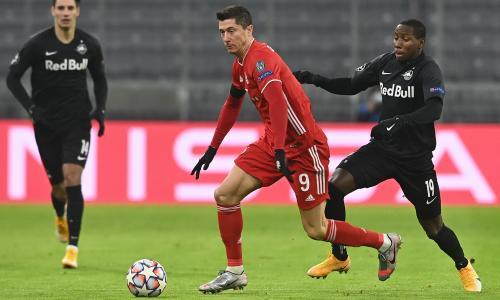

Robert Lewandowski
Some will mourn the end of the Lionel Messi and Cristiano Ronaldo era but it’s really a segue into a new one, of the centre-forward who further excels in his 30s – led by Lewandowski, who is indisputably improving.